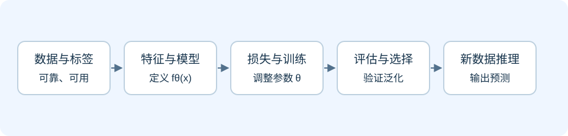
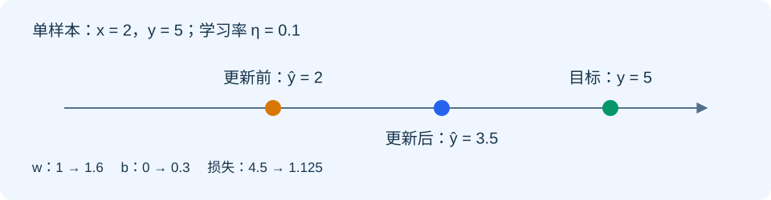
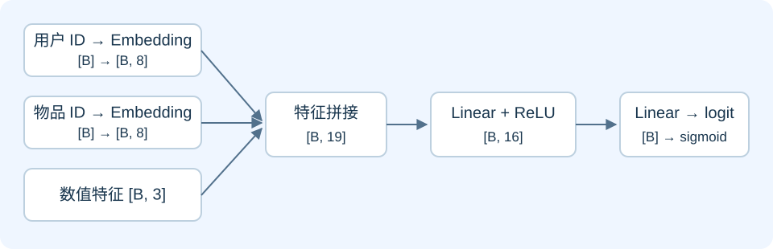
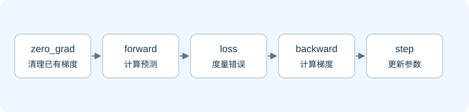
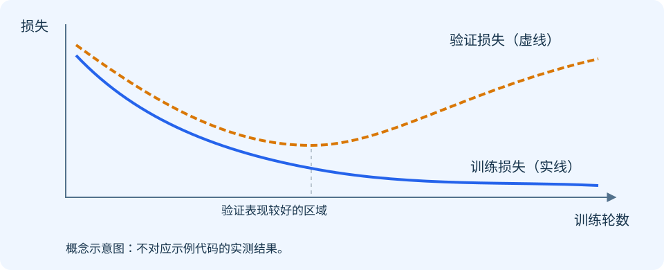

第一场：模型如何学习
从数据到参数：用 Embedding + MLP 理解机器学习与训练。
讲解目标与安排
面向具备基本 Python 经验的工程师，建议用 75～90 分钟讲解。听众结束后应能解释：模型与参数的关系、一次训练迭代的步骤、Embedding 与 MLP 的作用，以及训练和推理的区别。
贯穿问题：给定一个用户和一个物品，如何预测这个用户会不会点击？我们用一个教学版点击率模型回答这个问题。真实推荐系统还涉及召回、排序、曝光偏差和多目标优化，本场聚焦最小训练闭环。
| 环节 | 建议时间 | 要回答的问题 |
|---|---|---|
| 机器学习任务与数据 | 15 分钟 | 模型到底学什么？ |
| 参数、损失与梯度 | 20 分钟 | 错误如何变成参数更新？ |
| Embedding + MLP | 15 分钟 | 离散 ID 如何参与预测？ |
| PyTorch 训练与推理 | 20 分钟 | 代码如何实现训练闭环？ |
| 评估与讨论 | 10 分钟 | 怎么判断模型学得好？ |
1. 机器学习：从规则到可学习函数
传统程序由人明确写出规则；机器学习先选定一类带参数的函数，再用数据调整参数。模型不是“自己知道答案”，而是通过训练，使它在指定目标下减少预测误差。
我们将模型写成 ŷ = fθ(x)：x 是输入，θ 是参数，ŷ 是预测。训练改变 θ；推理使用已经训练好的 θ 处理新输入。
1.1 学习方式与任务类型是两个维度
| 维度 | 类别 | 含义与例子 |
|---|---|---|
| 学习方式 | 监督学习 | 使用输入与标签学习，如点击预测、房价预测 |
| 学习方式 | 无监督学习 | 挖掘未标注数据的结构，如聚类 |
| 学习方式 | 强化学习 | 通过环境反馈与奖励学习策略，如控制与决策 |
| 任务类型 | 分类 | 预测类别或类别概率，如是否点击 |
| 任务类型 | 回归 | 预测连续数值，如价格、观看时长 |
| 任务类型 | 排序 | 对候选项按相关性或收益排序 |
| 任务类型 | 生成 | 生成文本、图像或其他序列 |
分类和回归属于任务类型。推荐系统可以把点击率预测作为二分类任务，再按预测分数排序；排序任务本身也可以使用专门的排序损失。
1.2 数据、模型与训练策略共同决定结果
- 数据：输入是否有信息、标签是否可靠、样本是否代表上线场景。
- 模型：采用哪些特征、怎样组织计算、参数容量有多大。
- 训练策略：损失函数、优化器、学习率、采样方式、正则化等。
- 评估：采用什么数据切分与指标，是否匹配业务目标。
只有更大的模型，没有可靠的数据与评估，不一定带来更好的结果。

1.3 训练集、验证集、测试集
训练集用于更新参数；验证集用于选择超参数、模型和停止时机；测试集用于在方案确定后做最终评估。反复根据测试集结果调参，会削弱测试结果的可信度。
推荐场景常按时间切分：用较早的数据训练，较晚的数据验证或测试，以接近“用过去预测未来”的真实流程。比例不是固定标准，应根据数据规模和业务设计。
数据泄漏指训练或特征构建使用了预测时不应获得的信息，例如用点击后的行为预测是否点击，或在全部数据上拟合预处理统计量。预处理应在训练集上拟合，再应用到验证与测试数据。
2. 参数、超参数与模型结构
2.1 从一个线性模型开始
设输入 x = 2，目标 y = 5，模型为 ŷ = wx + b。w 和 b 是可学习参数。若初始 w = 1、b = 0，预测就是 2。
模型结构决定计算形式，参数决定这个形式下的具体函数。神经网络通常由多个这样的变换与非线性函数组合而成。
| 概念 | 例子 | 如何确定 |
|---|---|---|
| 可学习参数 | 权重、偏置、Embedding 向量 | 训练时由优化器更新 |
| 结构超参数 | 层数、隐藏维度、Embedding 维度 | 设计时选择，用验证集比较 |
| 训练超参数 | 学习率、batch size、训练轮数 | 训练前设定，也可按策略调整 |
| 模型状态 | BatchNorm 的运行统计量 | 训练时更新，但不是梯度优化的参数 |
2.2 MLP 的基本计算
线性层计算 h = xW + b，激活函数再引入非线性，例如 ReLU(h) = max(0, h)。多层感知机 MLP 将线性层和激活函数组合起来。
如果连续堆叠线性层而没有非线性激活，整体仍可合并为一个线性变换，因此不能仅靠增加线性层表达复杂的非线性关系。
3. 损失、梯度与优化器
3.1 损失函数：把错误变成一个数
回归可使用均方误差 MSE；二分类常用二元交叉熵 BCE。损失越小表示在当前数据和目标定义下拟合越好，但不保证泛化或业务收益更好。
二分类中，y ∈ {0, 1}，预测概率为 p：
L = −[y · log(p) + (1 − y) · log(1 − p)]当真实标签为 1，预测概率越接近 0，惩罚越大。实践中通常让模型输出 logits（未经过 sigmoid 的分数），使用 BCEWithLogitsLoss 在内部稳定地完成 sigmoid 与损失计算。
3.2 梯度：局部变化的方向与幅度
梯度描述损失对参数的局部变化率。梯度为正时，略微增加该参数会增加损失；梯度为负时，略微增加该参数会降低损失。优化器通常沿负梯度方向更新，但有限步长下并不保证每一步损失都下降。
反向传播利用链式法则从损失向前面的计算逐层传播，计算各参数的梯度。它负责“算梯度”，优化器负责“改参数”。
3.3 手算一次更新
为了方便推导，使用单样本平方损失 L = ½(ŷ − y)²，它与 PyTorch 默认 MSE 的缩放不同。
输入 x = 2，目标 y = 5
初始 w = 1，b = 0，学习率 η = 0.1
forward：ŷ = wx + b = 2
loss：L = ½(2 − 5)² = 4.5
∂L/∂w = (ŷ − y)x = −6
∂L/∂b = (ŷ − y) = −3
w_new = w − η · ∂L/∂w = 1.6
b_new = b − η · ∂L/∂b = 0.3
再次预测：ŷ_new = 1.6 × 2 + 0.3 = 3.5
新损失：L_new = ½(3.5 − 5)² = 1.125这是对当前单个样本的一次更新，并不代表模型已经学到了可泛化规律。HTML 中可以调整学习率，观察步长过大时的结果。

3.4 SGD 与 Adam
- SGD：基本更新为
θ ← θ − η∇θL，可以配合动量。 - Adam：维护梯度的一阶、二阶矩估计，用它们调整各参数的更新尺度。
- 学习率：控制更新尺度；太小可能进展慢，太大可能振荡或发散。
- Batch size：一次用于估计梯度的样本数，影响显存、吞吐与梯度噪声。
- Epoch：通常指遍历一次训练集；step 指一次参数更新，两者不同。
Adam 并非在所有任务上都优于 SGD；选择应结合训练稳定性和验证效果。
4. 推荐模型：Embedding + MLP
4.1 一条样本长什么样
| 字段 | 示例 | 用途 |
|---|---|---|
| user_id | 17 | 用户离散标识 |
| item_id | 204 | 物品离散标识 |
| dense_features | 已归一化的 3 个数值 | 预测时已知的用户或物品属性 |
| label | 1 | 曝光后是否点击，仅用于监督训练 |
ID 的数字大小通常没有业务距离含义，不能把“用户 20 比用户 10 大一倍”当作有效关系。Embedding 根据 ID 查表，取出对应向量。
4.2 Embedding 是可学习的查找表
用户表为 [用户数, D]，物品表为 [物品数, D]。每一行是一组参数，训练通过梯度更新这些向量。
Embedding 向量并不天然代表“年龄”“兴趣”等明确维度；它们的含义由数据、目标和训练共同形成。未见过的 ID 需要未知 ID、哈希桶或其他冷启动方案，实际部署时必须保证 ID 映射一致。
4.3 沿着 shape 读懂模型
设 B = batch size，Embedding 维度 D = 8，数值特征数 F = 3。
| 阶段 | 张量 shape | 说明 |
|---|---|---|
| user_id / item_id | [B] | 整数索引 |
| 用户 / 物品 Embedding | 各 [B, 8] | 查表后的向量 |
| 数值特征 | [B, 3] | 浮点输入 |
| 拼接特征 | [B, 19] | 8 + 8 + 3 |
| 隐藏层 | [B, 16] | 线性层 + ReLU |
| logits | [B] | 每条样本一个原始分数 |
| 点击概率 | [B] | 推理时对 logits 使用 sigmoid |

4.4 这个模型如何学习推荐关系
用户和物品向量与数值特征一起进入 MLP，模型根据点击标签调整 Embedding 与 MLP 参数。最终输出对当前特征和训练分布下点击概率的估计。
教学模型省略了特征交互层、多任务学习等机制。真实训练还需要处理负样本采样、曝光选择偏差和标签延迟；采样策略改变后，预测概率可能需要校准，不能直接假设它就是真实线上点击率。
5. PyTorch：实现最小训练闭环
下面代码可保存成 Python 脚本运行，需要安装 PyTorch。使用 CPU 与合成数据，方便观察完整流程，不用于评价真实推荐效果。
import torch
from torch import nn
# 固定随机种子，方便复现教学结果。
torch.manual_seed(7)
class ClickModel(nn.Module):
def __init__(self, n_users=100, n_items=200, dim=8):
super().__init__()
self.user_emb = nn.Embedding(n_users, dim)
self.item_emb = nn.Embedding(n_items, dim)
self.mlp = nn.Sequential(
nn.Linear(2 * dim + 3, 16),
nn.ReLU(),
nn.Linear(16, 1),
)
def forward(self, user_id, item_id, dense):
u = self.user_emb(user_id) # [B, 8]
v = self.item_emb(item_id) # [B, 8]
features = torch.cat([u, v, dense], dim=1) # [B, 19]
return self.mlp(features).squeeze(-1) # [B]
# 合成一个独立同分布的教学数据集。
n = 1024
users = torch.randint(0, 100, (n,))
items = torch.randint(0, 200, (n,))
dense = torch.randn(n, 3)
true_logits = 1.5 * dense[:, 0] - dense[:, 1]
labels = torch.bernoulli(torch.sigmoid(true_logits))
order = torch.randperm(n)
train_idx, val_idx = order[:800], order[800:]
model = ClickModel()
criterion = nn.BCEWithLogitsLoss()
optimizer = torch.optim.Adam(model.parameters(), lr=0.01)
for epoch in range(10):
model.train()
shuffled = train_idx[torch.randperm(len(train_idx))]
total_loss = 0.0
for idx in shuffled.split(64):
optimizer.zero_grad(set_to_none=True) # 清理上一步梯度
logits = model(users[idx], items[idx], dense[idx])
loss = criterion(logits, labels[idx])
loss.backward() # 计算梯度
optimizer.step() # 更新参数
total_loss += loss.item() * len(idx)
model.eval()
with torch.no_grad():
val_logits = model(users[val_idx], items[val_idx], dense[val_idx])
val_loss = criterion(val_logits, labels[val_idx]).item()
print(f"epoch={epoch + 1}, train={total_loss / len(train_idx):.4f}, "
f"val={val_loss:.4f}")
model.eval()
with torch.inference_mode():
probabilities = torch.sigmoid(model(users[:4], items[:4], dense[:4]))
print("predicted click probabilities:", probabilities)5.1 逐行解释训练关键步骤
model.train()：设置训练行为，影响 Dropout、BatchNorm 等模块。zero_grad()：清理已有梯度；PyTorch 默认累积梯度。model(...)：调用模块，进入 forward 并计算 logits。criterion(...)：将 logits 与浮点标签计算为标量损失。loss.backward()：计算并累积参数梯度，不直接更新参数。optimizer.step()：根据优化器状态与梯度更新参数。

5.2 训练与推理的区别
| 行为 | 训练 | 验证 / 推理 |
|---|---|---|
| forward | 需要 | 需要 |
| 标签与 loss | 通常需要 | 验证需要；线上预测通常不需要 |
| 梯度与 backward | 需要 | 通常关闭 |
| 更新参数 | 需要 | 不进行 |
| 模块模式 | model.train() | model.eval() |
eval() 不会关闭自动求导；no_grad() 或 inference_mode() 也不会自动设置 eval 模式。常规推理应同时考虑两者。本示例没有 Dropout / BatchNorm，因此模式切换不会改变这些层的输出，但仍保留标准写法。
6. 如何判断模型学得好
6.1 过拟合与泛化
训练损失下降而验证损失持续上升，是过拟合的常见信号：模型越来越贴合训练数据，却没有改善未见数据的效果。
应先检查数据切分和分布，再考虑减少模型容量、正则化、更多数据、Dropout 和早停。早停根据验证表现选择模型，实际使用时需要保存并恢复最佳权重。

该图是概念示意，不是上述合成数据代码的实际运行曲线。真实曲线可能波动，单次波动不应直接判断为过拟合。
6.2 指标必须匹配目标
- Log loss：评价概率预测，关注预测置信度是否合理。
- AUC：评价正样本整体排在负样本前面的能力，不能单独说明概率校准好坏。
- Accuracy：依赖分类阈值，类别极不平衡时可能误导。
- 排序指标：如 NDCG、Recall@K，适用于对应召回或排序场景。
- 业务指标：点击、转化等需结合线上实验，离线效果提升不保证线上收益提升。
例如点击率只有 1%，始终预测“不点击”也有 99% accuracy，但没有识别点击用户的价值。
7. 现场演示与练习
- 打印 Embedding、拼接特征、logits 的 shape，确认
[B, 8] → [B, 19] → [B]。 - 比较
backward()前后model.mlp[0].weight.grad，观察梯度何时产生。 - 复制一份参数，对比
optimizer.step()前后数值，区分计算梯度与更新参数。 - 调整学习率，观察训练进展和稳定性；不要根据一次运行就下结论。
- 增加模型容量或训练轮数，比较训练与验证损失。
- 推理时输出 logits 和 sigmoid 概率，解释二者的区别。
自测问题
- 分类、监督学习和推荐系统为什么不是同一层次的分类？
- 权重和学习率，哪个由梯度直接更新？
backward()是否已经改变权重？- Embedding 的 ID 为什么使用整数索引，而不是把 ID 当作连续特征？
BCEWithLogitsLoss前为什么不应额外调用 sigmoid？- 为什么训练损失最低的模型不一定最好？
eval()与inference_mode()分别负责什么？
自测答案要点
监督学习是学习方式，分类是任务类型，推荐系统是应用场景。权重由优化器更新，学习率是超参数。backward 计算梯度，step 更新权重。ID 是类别标识，Embedding 通过整数索引查表。BCEWithLogitsLoss 内部已包含 sigmoid。模型选择看验证表现与业务相关指标。eval 设置模块行为，inference_mode 关闭梯度记录并减少相关开销。
8. 与第二场的衔接
本场把 forward 看成一组张量运算。第二场继续追问：Embedding 查表、矩阵乘法和 ReLU 如何被 PyTorch 执行？它们如何进入 GPU kernel？为什么同一个模型的速度会随 batch size、dtype 和编译方式变化？